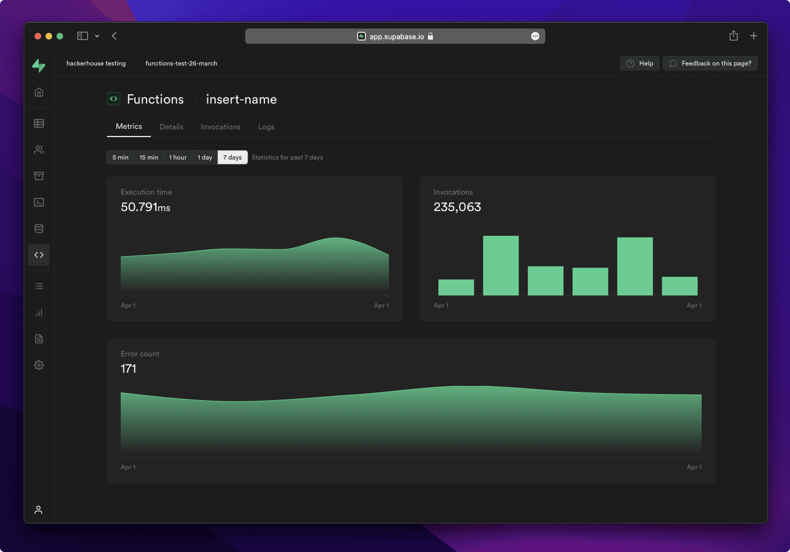

FlutterFlow Builder Interface

Use the left navigation to move between building, data, and project areas.
Official documentation
Navigation MenuToolbarCanvasProperties Panel
Application Development & Emerging Technologies
FlutterFlow + Supabase Track
Student Edition - expanded lesson explanations
You will design, build, and ship a working responsive web app from scratch using modern no-code/low-code tools.
Not theory. Not PowerPoint apps. Real, functional software that solves real problems.
App Thinking, Planning, UI/UX Design
FlutterFlow Foundations + Supabase Basics
Auth, CRUD, Roles, Enhancements
Testing, Docs, Presentation, Ship It
Application (App) = A software program designed to perform a specific task or group of tasks for the user.
Every app you use daily, from GCash to Facebook to Grab, someone had to think it up, design it, build it, and maintain it.
Messenger
Communication
GCash
Finance
Grab
Transportation
TikTok
Entertainment
Shopee
E-commerce
Canvas/LMS
Education
| Type | Description | Example |
|---|---|---|
| Mobile App | Runs on phones/tablets | Instagram, Grab |
| Web App | Runs in a browser | Gmail, Google Docs |
| Desktop App | Installed on PC/Mac | VS Code, Photoshop |
| Hybrid/Cross-platform | One codebase, multiple platforms | Flutter apps, React Native |
Built for ONE platform only
ONE codebase, multiple platforms
A platform is the environment where people use the app: a phone, a browser, or a desktop computer.
The same service can have several versions. Gmail, for example, has web and mobile apps.
A cross-platform tool lets one project target more than one platform.
For this course, that means you can focus on solving the problem instead of maintaining separate Android, iOS, and web projects.
Key idea: cross-platform saves development time, but you still test the app on every target device.
The app economy generated over $935 billion in 2023. This is the industry you're learning to build for.
USER → Frontend (UI) → API → Backend (Server) → Database
Every app follows this pattern. The user interacts with the frontend. The frontend talks to the backend. The backend stores/retrieves data.
The user sees one action, but several parts cooperate behind the scenes.
What users SEE and TOUCH
What runs BEHIND the scenes
API = Application Programming Interface
Think of it as a waiter in a restaurant:
The app sends an instruction or asks for data.
Example: "Give me all lost-item posts added today."
The backend returns data or explains what went wrong.
Example: a list of posts, or an error saying the connection failed.
APIs use agreed rules so two systems can exchange information without knowing each other's internal code.
| Approach | Code Level | Speed | Example |
|---|---|---|---|
| Traditional | 100% code | Slow (months) | VS Code + Flutter |
| Low-Code | Visual + some code | Fast (weeks) | FlutterFlow ⭐ |
| No-Code | Zero code | Very fast (days) | Adalo, Glide |
We use FlutterFlow: the sweet spot between power and speed.
Visual Builder
Drag-and-drop UI design
Cross-Platform
Web-first project with responsive breakpoints
Real Flutter
Generates production-ready code
Integrations
Firebase, Supabase, APIs
Test Mode
Preview instantly in browser
Free Tier
Perfect for students

Connection: FlutterFlow calls Supabase APIs, then turns the returned data into screens the user can understand.
Solves a Problem
Clear purpose, real value
Easy to Use
Intuitive, no manual needed
Fast & Reliable
No crashes, quick loading
Beautiful Design
Clean, modern UI
Secure
Protects user data
Maintainable
Easy to update/improve
1. Ideation → What problem to solve?
2. Planning → Requirements, user flow, wireframes
3. Design → UI/UX, screens, navigation
4. Development → Build frontend + backend
5. Testing → Find and fix bugs
6. Deployment → Ship it to users
7. Maintenance → Update and improve
| Phase | Period | Focus |
|---|---|---|
| Ideation + Planning | Weeks 1-3 | Problem, users, requirements |
| Design | Weeks 3-4 | Wireframes, UI/UX |
| Development | Weeks 5-14 | Build with FlutterFlow + Supabase |
| Testing + Polish | Weeks 15-16 | QA, bug fixes, documentation |
| Demo + Ship | Weeks 17-18 | Present and submit |
Lost & found, event tracker, study group finder, complaint system
Inventory tracker, appointment booking, order management
Medicine reminder, fitness tracker, mental health journal
Barangay services, carpool matching, local events
Budget tracker, habit builder, task manager
Recipe sharing, pet adoption board, campus confessions
| Component | Weight | Description |
|---|---|---|
| Class Participation | 10% | Attendance and engagement |
| Lab Outputs | 30% | Session-by-session builds |
| Exams | 20% | Prelim, Midterm, Semi-final |
| Final Project | 40% | Working app + docs + demo |
The final project is cumulative. You build it piece by piece every session.
The next lesson turns an app idea into requirements, user stories, and a user flow diagram.
Account setup will be introduced before the hands-on building sessions.